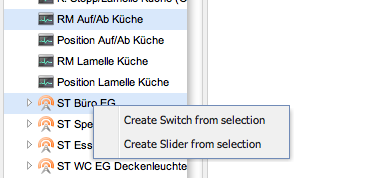

Hi
hopefully this is not a double posting, but searching did not have any results.
When trying to add a switch to my newly imported data I can give a name, select the sensor and when clicking the ON command button I get an empty box. After about 2 Minutes comes another box with the following error:
502
Bad Gateway
The proxy server received an invalid response from an upstream server.
Apache/2.2.10 (CentOS) Server at composer.openremote.org Port 80
thanks for your help...
Achim
Edit: Now, after a while the error is 500 See server log...
{kind=link}
|
Let me know the username of your account in designer and I'll give it a try. Thanks, – Juha |
|
thanks for the offer. At the moment I am fiddling around with my temperature values from my InZennio touch panels and the corresponding actors. Maybe I will have ask for help in another thread... The other thing is I am trying to make OR it installable on gentoo systems. If you know someone, who already did, please let me know best |
|
Hi Juha again after importing some KNX commands I get the 502 error when trying to add a slider. The error shows when trying to add the setValue: The proxy server received an invalid response from an upstream server. would you please be so kind and have a look at the data? The account name is a.bohmann thanks for your help |
|
Can you try the new release candidate currently in http://composer.openremote.org/staging and see if it has the same issue? |
|
Yes, still the same thing. If you prefer, you can get a remote session (teamviewer) to my machine to have a life view of the issue. |
|
I was able to reproduce the issue, thanks. The work-around currently is to select the setValue command and the range sensor for the slider on the left-hand side (use control key to make multiple selection) and then right-click on the selection and choose create slider.  |
|
Thanks for your help. The work-around makes me work this night to get my blinds working :-D |